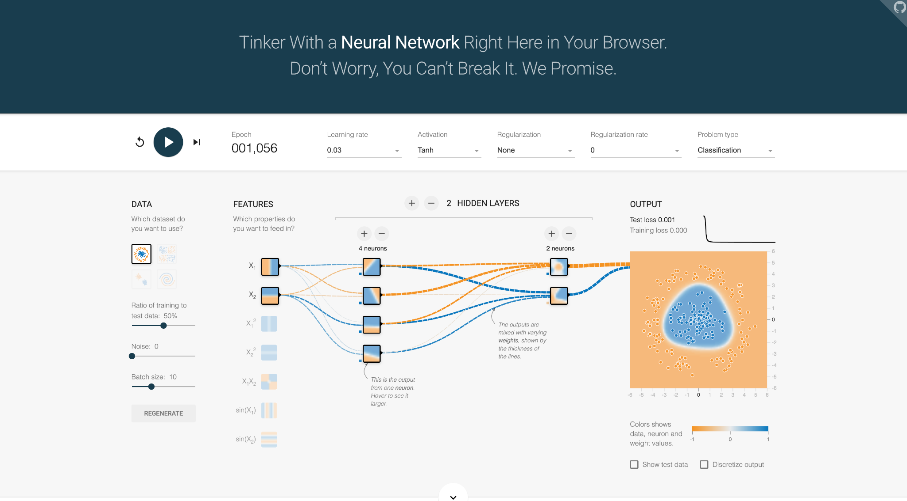
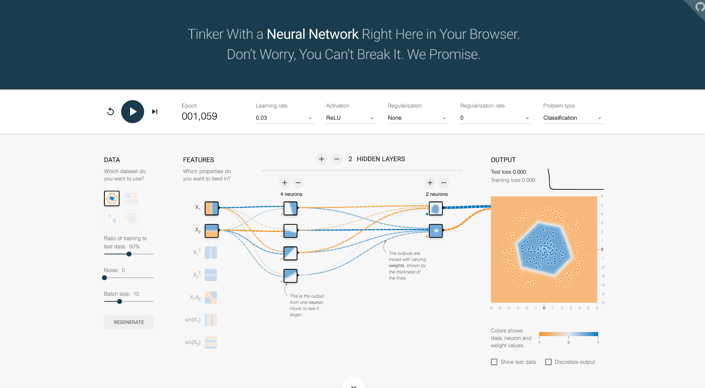
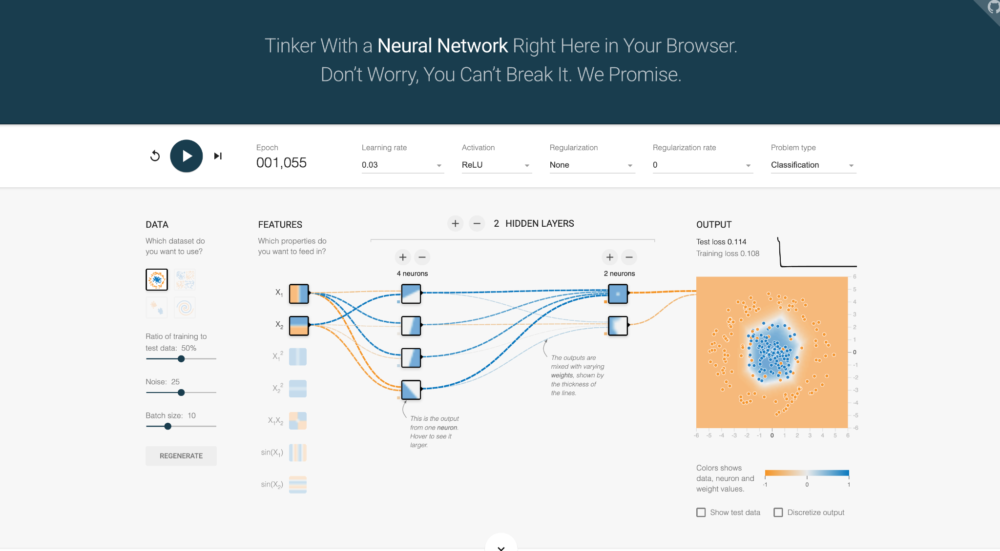
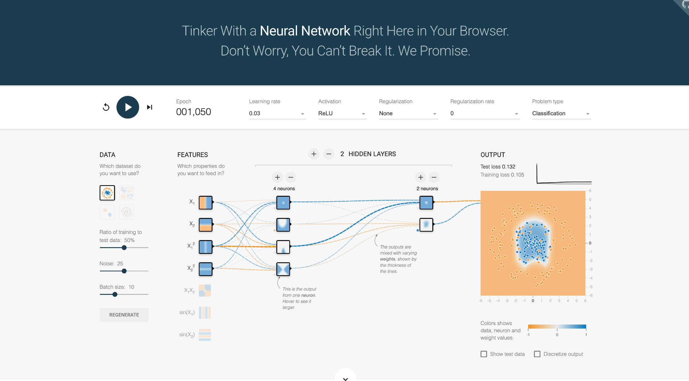
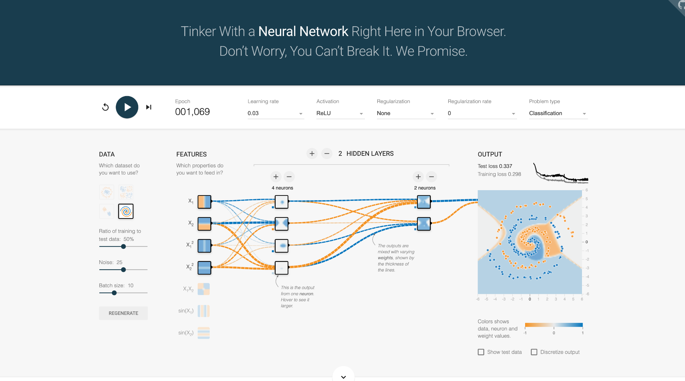
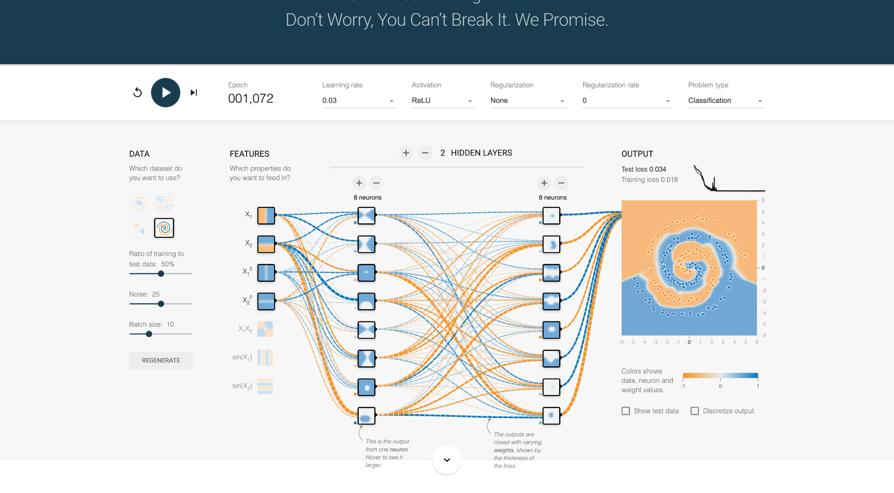

AIML-501 · Assignment 2.4
Neural Network
Fundamentals
A visual guide to structure and learning
Narayana Murari Gowrishetty
Web edition of the nine-slide presentation, with the original experiment screenshots.
Input, hidden, and output layers
A forward pass transforms features into a prediction.
- Input
Measured features, such as x₁ and x₂ - Hidden
Learned transformations of the preceding layer - Output
A predicted value or class, ŷ
Layers and neurons
01 · Layers
A layer groups units at the same stage. Hidden layers transform the previous layer’s outputs.
02 · Neurons
A neuron combines weighted inputs, adds a bias, and applies an activation.
a = f(Σ wᵢxᵢ + b)
Depth is the number of hidden layers. Width is the number of neurons per layer.
Weights and activation functions
03 · Weights
Weights control the strength and sign of each input’s contribution. Training adjusts weights and biases.
04 · Activation functions
Nonlinear activations help the network represent curved or complex patterns.
ReLU(z) = max(0, z)
For example, ReLU(−2) = 0 and ReLU(3) = 3.
Loss, backpropagation, and optimization
05 · Loss function
Measures the mismatch between predictions and known targets.
Backpropagation
Uses the chain rule to compute how each parameter affects the loss.
06 · Optimizer
Uses those gradients to update weights and biases.
Activation comparison on circles
Two hidden layers (4, 2 neurons), x₁ and x₂, noise 0.

Epoch 1,056 · Training loss 0.000 · Test loss 0.001
Select the screenshot for the full-size image.

Epoch 1,059 · Training loss 0.000 · Test loss 0.000
Select the screenshot for the full-size image.
Both runs separated the circle pattern with very low displayed loss.
Single runs, different initial weights and slightly different epochs. Displayed 0.000 is rounded.
Noise and input features
Circles, ReLU, two hidden layers (4, 2 neurons), noise 25.

Epoch 1,055 · Training loss 0.108 · Test loss 0.114
Select the screenshot for the full-size image.

Epoch 1,050 · Training loss 0.105 · Test loss 0.132
Select the screenshot for the full-size image.
Added squared features lowered training loss slightly but raised test loss.
Noisy runs had higher loss than the noise-0 ReLU run. These comparisons are exploratory.
Network width on the spiral dataset
ReLU, noise 25, four inputs: x₁, x₂, x₁², x₂².

Epoch 1,069 · Training loss 0.298 · Test loss 0.337
Select the screenshot for the full-size image.

Epoch 1,072 · Training loss 0.018 · Test loss 0.034
Select the screenshot for the full-size image.
The wider network traced the spiral more closely in these runs.
Width changed, not hidden-layer count. Different initial weights and epochs limit causal claims.
Key takeaways
Six components work together
Layers organize neurons. Weights and activations shape predictions. Loss defines the objective, and the optimizer updates parameters.
Results depend on the configuration and data
Noisy runs had higher loss. Squared features did not improve test loss in the circle comparison. The wider network fit the spiral better here.
Repeated runs with matched data and equal epochs would strengthen the comparisons.
Experiment settings and sources
The screenshots show a learning rate of 0.03, no regularization, a 50% training/test split, and batch size 10. Results are displayed losses, not accuracy percentages.
Source: TensorFlow Playground, six runs recorded November 6, 2026.